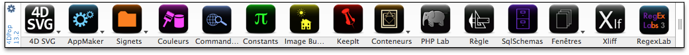
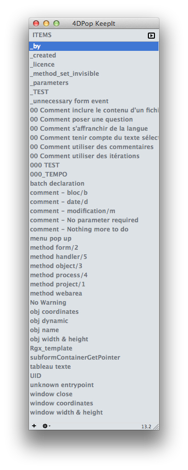
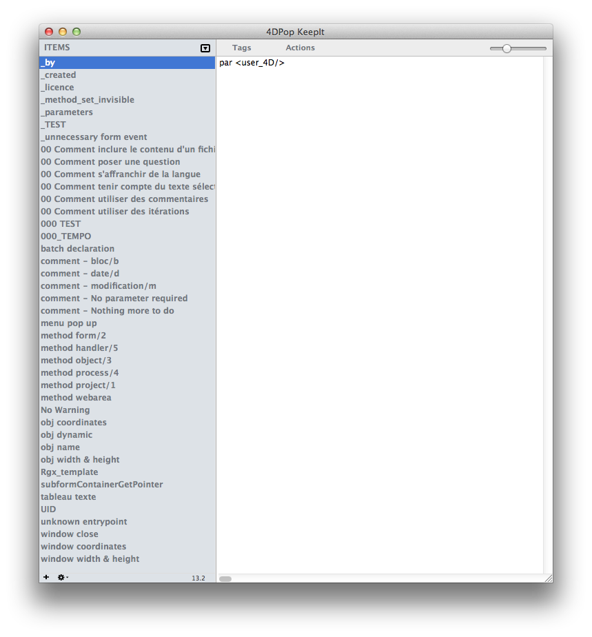
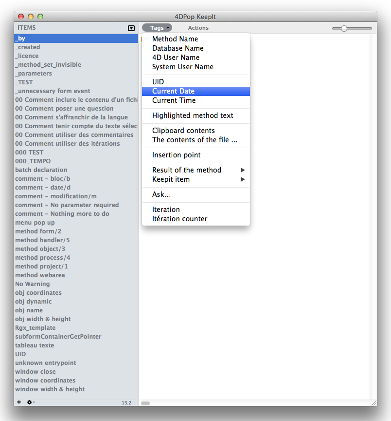

4DPop KeepIt |
|
| |
|
||||
4DPop KeepIt is a snippets manager, these little bits of code or text that you reuse everywhere. In other words, this tool allows you to store pieces of code and reuse it when you need it by a simple keys combination, a drag and drop or a copy and paste.
The items stored are saved from one session to another and are accessible from all of the databases from the time the component is loaded.
One more thing… 4DPop KeepIt is very similar to macros 4D, but easier to use and especially more powerful.
| 1. | Place the folder "4DPop KeepIt.4dbase"* or an alias of it "Components" next to the 4D executable** so that the component will be loaded for all the databases |
| 2. | Open your database. |
| 3. | If the componant 4DPop is installed a new button "KeepIt" apears in the toolbar. It allows opening the editor.
 If the componant 4DPop is not installed you must, to open the editor, create a method wich call the command KeepIt_tool |
*On Macintosh, the component is a package with extension ".4dbase" who is not necessarily visible according to the adjustabilitys of your preferences.
**On Macintosh, the Components folder is inside the 4D application package, at the root of the folder "Contents"
Select a snippet of code in the editor, drag it on the toolbar 4DPop and drop it on the button "KeepIt", at the prompt, enter a name for this new item and confirm. That's it!
In the editor, type "$$" + Tab. A popup menu appears, select the desired item and that's it ! Its content is pasted into the editor.
The snippets can contain tags which will be evaluated at the time of the use of the item. The tags are using the same syntax than the macros tags of 4D..
Tags |
Description |
||||
<uid/> |
Tag replaced by an UID generated at the time of the use. | ||||
<database_name> |
Tag replaced by the name of the structure file. | ||||
<keepit/> |
Tag replaced by the content of another KeepIt item Attribute:
|
||||
<ask/> |
This tag allows you to create an interactive macro, ie a macro that allows the user to change the result by entering values in response to questions. The engine asks questions and uses the answers in the returned text. Attribut :
| ||||
<file/> |
Tag replaced by the content of a text file . Attribut :
Note : The file may contain tags which will be first interpreted. |
||||
<iteration/> |
This tag allows you to repeat a line of the macro. Attribut :
|
||||
<method-attribute/> |
This item allows you to set a project method attribute. Attribut :
This tag is ignored if it is not a project method. |
||||
<method_type/> |
Tag replaced by the type of the current edited method. The results is those given by the command "METHOD RESOLVE PATH" except for object method that is 8858. | ||||
#_IF |
These tags allow processing to perform portions of conditional macro so.
return in method one or the other line of comment depending on your response. |
*4DPop KeepIt does not treat the attribute "index" of the tag <clipboard>. This tag is generally replaced by the text contents of the clipboard at the time of the call.
*4DPop KeepIt accepts, for tag <date/>, the formats "y", "m" & "d" to display only the year, month or day. Are also accepted formats such as "y/m/d" in any order and with any character separator. Example "m-y" gives "1-2013" between 1/1/2013 and 31/1/2013. "©2009 - <date format="y"/>" will be replaced by "© 2009-2012" in 2012.
A click on the button "KeepIt" of the toolbar 4DPop, opens the KeepIt editor.
|  |
With the list, you can drag an item in the method editor or copy it to place its contents, after interpretation, in the clipboard.
There is a wizard for building most of these tags. To insert a tag in the macro, use the menu "Tags" and select the item you want. If necessary, the wizard helps you build the element according to your answers. Note: The hierarchical item "Result of method" lists the methods of your database that have the attribute "Shared by components and host database" checked. KeepIt accepts comments delimited by the sequence «/ * ... * /». All that is between «/*» and «*/» will be deleted from the text returned in the method editor but if there is tags, they will first be interpreted. Comments allow you to document your snippets. The first comment found in the macro is used as the text of the tooltip when the item is hovered in the list. In the absence of comment in the macro, the beginning of the text fragment is used as tooltip. Other tags (listed below) are used by KeepIt for doing a tokenization of the macro. That allows you to share fragments in a team where developers use a 4DUS or a 4DFR. You can tokeniser a snippet by selecting the corresponding item in the "Actions" menu Double-click on an item in the list to rename it. The right pane allows you to edit the text attached to an item. A context menu in the list is available to perform common actions. It is possible to export an item in a text document via the context menu item "Export ..." or by dragging the item on the desktop by holding down the Option on Mac or Alt on PC. In the second case the generated document is the name of the item being dragged. Conversely, it is possible to import the contents of a text document in a new snippet via the menu "Import ..." or by dropping a text document on the list of items. In the second case the item automatically takes the name of the document. |
 |
KeepIt installs 3 macros when it is loading:
Name |
Shortcut |
Text entry |
|
KeepIt |
Cmd + "€"* |
$$ |
Display the selection menu item to insert. This method of activation, that is equivalent to type the text "$$" + Tab, has the advantage of preserving the mechanism of the tags <selection/> and <carret/> that are otherwise ignored. |
KeepIt = |
Cmd + "=" |
++ |
Calls the last snippet, without having to display the list and to select the item. |
KeepIt + |
Cmd + "±" |
This macro, called when text is selected in the Method Editor, proposes to create a new fragment. |
There is a shared method Keepit_get_item_by_name that can be used with your 4D macros. Placed between the element tags "<method>" and "</method>" with a name of a KeepIt's item as parameter, this method return the text associated to the named item. Consider for example a Keepit's item named "database_name" containing the text "<database_name/>". In a macro file, you can insert the name of the current database by including in your macro text: <method>Keepit_get_item_by_name ("database_name")</ method>.
This component is given in compiled version, but you will find the code source in the folder "Sources" inside the component folder.
A dedicated forum is available here: 4DPop Forum
| <command/> | Tag replaced by the localised name of a 4D command.
Attribute: This tag will be useful for build macros that will be usable with all versions of 4D (INTL or FR) |
| <constant/> | Tag replaced by the localised name 4D constant
Attribute: This tag will be useful for build macros that will be usable with all versions of 4D (INTL or FR) |
| <if/> <else/> <end_if/> <case_of/> <end_case/> <while/> <end_while/> <for/> <end_for/> <repeat/> <until/> |
These Tags will be replaced by the localized version of the control flow structures of 4D.
The use of these tags allow to build macros that will be usable with all versions of 4D (INTL or FR) For example this code: //Run 4DPop Will be pasted in a 4D INTL like this: //Run 4DPop and like this in a 4D FR: //Run 4DPop |